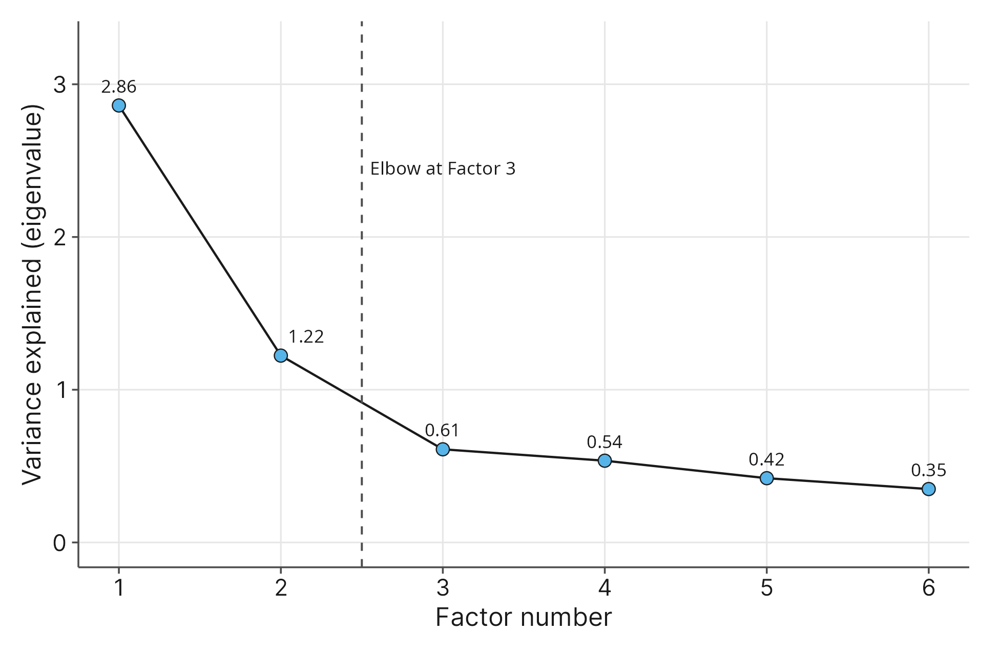
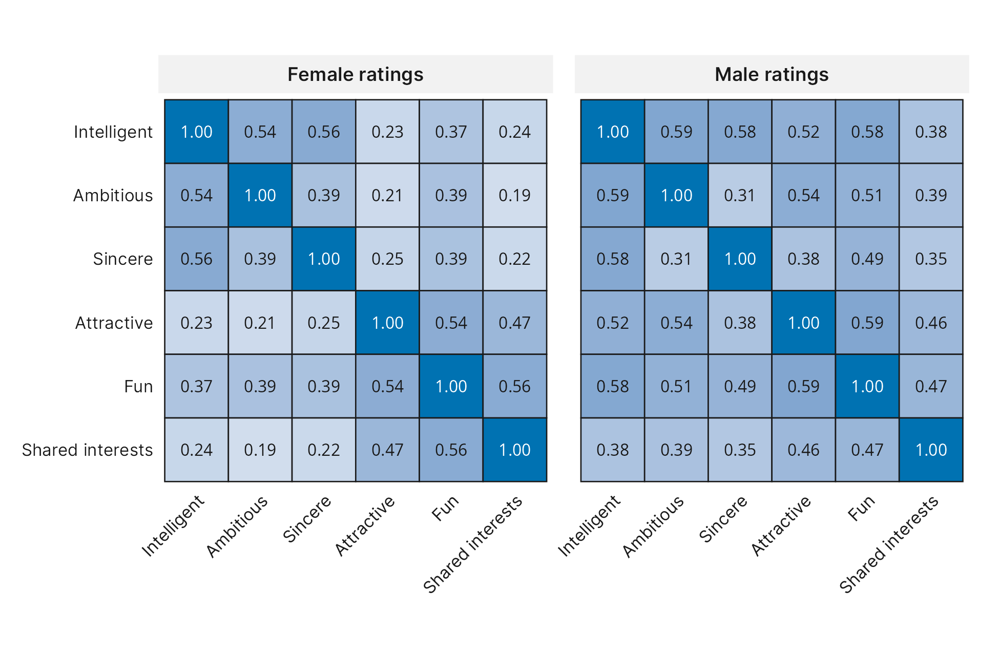

11 Factor Analysis
11.1 Introduction
Imagine a social psychologist wants to understand what drives human attraction during a first impression. You cannot simply walk up to someone after a date and measure their feelings with a physical ruler. Attraction, compatibility, and romantic appeal are abstract ideas. In the social sciences, we call these hidden, unobservable ideas latent constructs (underlying traits or concepts that cannot be measured directly, such as intelligence, anxiety, or social appeal).
Because you cannot measure a latent construct directly, you have to measure it indirectly. You ask participants a long list of specific survey questions and hope their answers reflect those deeper, hidden feelings.
For example, suppose a participant finishes a brief four-minute speed date. You hand them a clipboard and ask them to rate their partner on a 1 to 10 scale across six different traits: physical attractiveness, sincerity, intelligence, how fun they are, their level of ambition, and whether they share common interests.
As you look at the completed scorecards, a new question emerges. When a participant fills out those six ratings, are they truly making six independent judgments in their head? Or are those six numbers actually being driven by just one or two deeper, subconscious themes?
Think about how people evaluate a potential partner during a brief conversation. Someone might quickly judge a partner’s immediate, exciting social vibe, which causes their ratings for physical attractiveness, fun, and shared interests to move together. At the same time, they might evaluate the partner’s long-term stability and career potential, causing their ratings for intelligence, ambition, and sincerity to cluster together. If these traits naturally group together in people’s minds, then your six survey questions are really measuring two underlying latent constructs: immediate social appeal and long-term socioeconomic status.
Discovering these hidden groups within survey data is the exact purpose of factor analysis (a statistical technique used to identify a small number of hidden, underlying themes among a large set of observed variables). In Chapter 2, you learned how to use Cronbach’s alpha to check if a set of survey questions reliably measures a single concept. However, Cronbach’s alpha assumes you already know which questions belong together. What happens when you design a brand-new survey with dozens of questions and you do not know how many different concepts you are measuring? Factor analysis solves this problem by scanning the patterns in your data and revealing which questions naturally cluster together around shared, hidden themes.
To explore how researchers uncover these hidden themes, you will analyze the speed_dating.csv dataset from the data subfolder (Gelman & Hill, 2007). You first encountered this dataset in Chapter 8 when we examined paired yes-or-no dating decisions. The data comes from experimental speed-dating events conducted with graduate and professional students at Columbia University. During these events, participants had four-minute conversations with partners of the opposite sex. After each four-minute interaction, both participants privately filled out a scorecard rating their partner on several attributes from 1 to 10. To ensure that every row represents an independent interaction, this file includes only the very first speed date from each session, giving us 276 unique pairs.
While speed_dating.csv contains 22 variables tracking demographic details and final match decisions, we will omit the unused demographic and outcome variables for this chapter. Instead, you will focus on the twelve specific partner rating variables (six completed by the male participants, and six completed by the female participants - replace F with M at the end of the following variable names for the male participant’s views of the female partner):
AttractiveF: A numerical variable recording the female participant’s rating of the male partner’s physical attractiveness on a 1 to 10 scale.
SincereF: A numerical variable recording the female participant’s rating of the male partner’s sincerity on a 1 to 10 scale.
IntelligentF: A numerical variable recording the female participant’s rating of the male partner’s intelligence on a 1 to 10 scale.
FunF: A numerical variable recording the female participant’s rating of how fun the male partner is on a 1 to 10 scale.
AmbitiousF: A numerical variable recording the female participant’s rating of the male partner’s level of ambition on a 1 to 10 scale.
SharedInterestsF: A numerical variable recording the female participant’s rating of how much they share common interests with the male partner on a 1 to 10 scale.
Notice that although these ratings are recorded as numbers from 1 to 10, they originate from ordinal, Likert-style survey scales. As we work through this dataset, you will learn how treating ranked survey items as numerical variables affects our analysis and what to keep in mind when interpreting the results.
By the end of this chapter, you will know how to use factor analysis to uncover hidden constructs inside complex survey data. You will learn how to avoid a common software trap by distinguishing between true factor analysis and a popular data-compression tool called Principal Components Analysis (PCA). You will also learn how to choose an appropriate factor extraction method, distinguish between exploratory and confirmatory approaches, and use visual tools called Scree charts to decide how many hidden factors exist in your dataset. Finally, you will connect factor analysis directly back to Cronbach’s alpha, giving you a complete workflow for discovering hidden survey themes and verifying that each newly discovered cluster of questions forms a reliable measurement scale.
11.2 The Purpose of Factor Analysis: Uncovering Latent Constructs
When researchers design a survey, they often write dozens of questions to capture how people think, feel, or behave. However, individual survey questions are rarely the true target of the research. If a psychologist asks you ten different questions about your sleeping habits, your appetite, and your daily energy levels, they are not actually studying sleep or appetite in isolation. Instead, they care about the broader, hidden concept of clinical depression that sits behind those questions.
Earlier in this course, you learned how to measure the linear relationship between two numerical variables using the correlation coefficient (\(r\)). When you have just two variables, a single correlation is easy to interpret. What happens, however, when you have six, twelve, or fifty variables on a survey?
Imagine you open speed_dating.csv from the data subfolder and examine the six ratings completed by the female participants after their four-minute speed dates: AttractiveF, SincereF, IntelligentF, FunF, AmbitiousF, and SharedInterestsF. Rather than analyzing just one pair of variables at a time, you can ask your statistical software to calculate the correlation for every possible pair at once. This produces a correlation matrix (a table that displays the correlation coefficients between every possible pair of variables in a list).
If people evaluated each of these six traits independently, the correlation matrix would be filled with numbers close to zero. Knowing that a female participant thought her date was intelligent would tell you nothing about whether she also thought he was sincere or ambitious. Similarly, if participants decided within the first ten seconds whether they liked their partner and blindly gave them the same score across all six categories, every correlation in the table would be extremely high across the board.
When you examine a correlation matrix for the six dating ratings in speed_dating.csv, you find neither of those extremes. Instead, the correlations form distinct neighborhoods. Ratings that capture immediate social chemistry (like how attractive or fun a partner seems) tend to correlate strongly with one another, while ratings that reflect character and long-term potential (like intelligence, ambition, and sincerity) form their own tight-knit cluster. Aside from a few overlapping traits, the correlations between these two neighborhoods are noticeably weaker.
Why do these scores move together in distinct clusters? Factor analysis operates on a simple, intuitive premise: observable variables correlate with one another because they are being caused by the same hidden factor (an unobserved variable in a statistical model that represents a latent construct and influences how participants respond to multiple related survey items).
Think of a hidden factor like a puppeteer holding the strings of several puppets at once. You sit in the audience and watch six puppets on a stage. You cannot see the puppeteers standing hidden above the curtain, just as you cannot directly see a participant’s subconscious evaluation of “Social Appeal” or “Socioeconomic Status.” However, when the first puppeteer pulls their hand up, three specific puppets (AttractiveF, FunF, and SharedInterestsF) all rise at the same time. A moment later, a second puppeteer pulls their hand up, and the other three puppets (IntelligentF, AmbitiousF, and SincereF) rise together. By carefully watching which puppets move in sync on stage, you can deduce how many puppeteers are hiding behind the curtain and which strings each one controls.
This reveals why factor analysis is such an essential tool in social science research. Without it, a researcher analyzing speed_dating.csv would have to run six separate analyses for the male ratings and six separate analyses for the female ratings, or else arbitrarily guess which variables to average together. If you try to put all six ratings into a multiple regression model at the same time to predict whether someone gets a second date, you will run straight into the problem of multicollinearity that we explored in Chapter 5, because the predictors overlap so heavily.
Factor analysis solves both problems at once. First, it serves as a tool for psychological discovery, mapping out the hidden mental categories people use when making judgments. Second, it simplifies your dataset. Instead of juggling six overlapping survey items, you can group them into two clean, distinct factors, making your future statistical models much easier to build and interpret.
11.3 Reading Factor Analysis Tables
Knowing that hidden factors exist in theory is helpful, but as a researcher, you need to know how to spot them in your software output. When you run a factor analysis in a program like SPSS, Minitab, or Stata, the software generates several diagnostic tables. To build your intuition step by step, we will walk through the two most important tables side by side: the correlation matrix and the rotated factor matrix.
11.3.1 The Correlation Matrix
Before extracting any hidden factors, your first step is always to inspect the raw correlation matrix for your survey items. Let’s review the actual correlations among the six partner ratings completed by the female participants in speed_dating.csv (Gelman & Hill, 2007).
| Variable | AttractiveF | SincereF | IntelligentF | FunF | AmbitiousF | SharedInterestsF |
|---|---|---|---|---|---|---|
AttractiveF |
1.000 | 0.246 | 0.226 | 0.543 | 0.209 | 0.467 |
SincereF |
0.246 | 1.000 | 0.563 | 0.387 | 0.393 | 0.222 |
IntelligentF |
0.226 | 0.563 | 1.000 | 0.368 | 0.541 | 0.236 |
FunF |
0.543 | 0.387 | 0.368 | 1.000 | 0.391 | 0.556 |
AmbitiousF |
0.209 | 0.393 | 0.541 | 0.391 | 1.000 | 0.187 |
SharedInterestsF |
0.467 | 0.222 | 0.236 | 0.556 | 0.187 | 1.000 |
Notice that a correlation matrix is symmetric: the numbers above the diagonal line of \(1.000\) values are an exact mirror image of the numbers below the diagonal. Every cell tells you the linear correlation (\(r\)) between the variable in that row and the variable in that column.
If you scan across the rows of Table 11.1, you can already see the two neighborhoods we discussed in Section 11.2 beginning to take shape:
- Neighborhood 1 (Character and Intellect): Look at the row for
IntelligentF. When a female participant rates her date highly on intelligence, she also tends to rate him much higher onSincereF(\(r = 0.563\)) andAmbitiousF(\(r = 0.541\)). Similarly,SincereFandAmbitiousFcorrelate moderately well with each other (\(r = 0.393\)). - Neighborhood 2 (Immediate Chemistry): Now consider the row for
AttractiveF. A high rating on physical attractiveness connects strongly toFunF(\(r = 0.543\)) andSharedInterestsF(\(r = 0.467\)). Furthermore,FunFandSharedInterestsFshow one of the strongest connections in the entire table (\(r = 0.556\)). - Weak Cross-Neighborhood Connections: Next, check how these two groups interact with each other. Knowing that a participant rated her date high on
AttractiveFtells you very little about whether she thought he wasSincereF(\(r = 0.246\)),IntelligentF(\(r = 0.226\)), orAmbitiousF(\(r = 0.209\)). Likewise,SharedInterestsFshows weak correlations withSincereF(\(r = 0.222\)),IntelligentF(\(r = 0.236\)), andAmbitiousF(\(r = 0.187\)).
However, Table 11.1 also shows why simply eyeballing a correlation matrix is not enough. Look closely at the row for FunF. Even though FunF correlates most strongly with SharedInterestsF (\(r = 0.556\)) and AttractiveF (\(r = 0.543\)), it also shows moderate correlations with SincereF (\(r = 0.387\)), IntelligentF (\(r = 0.368\)), and AmbitiousF (\(r = 0.391\)). Why does FunF seem to bridge both groups? In a four-minute speed date, witty banter or an engaging story can make someone seem fun, intelligent, and ambitious all at once.
If you already encounter blurry boundaries like FunF when working with just six variables, imagine trying to untangle a correlation matrix with thirty or forty survey questions. Rather than guessing where the boundaries lie, we need factor analysis to mathematically separate the shared themes from the unique variance.
11.3.2 The Factor Matrix
To run a factor analysis, you must first tell your statistical software how many hidden factors to look for. Because our inspection of the correlation matrix suggested two distinct neighborhoods of traits, we instructed the software to extract exactly two factors. (Of course, when you analyze a large survey with dozens of items, you will not be able to guess the number of factors by eye; in Section 11.6, you will learn an objective visual method for deciding exactly how many factors to extract.)
Once the software extracts the two hidden factors, how do you know which survey questions belong to which factor? You examine a table of factor loadings, which are numerical weights ranging from \(-1\) to \(1\) that measure the strength and direction of the relationship between an observed survey variable and a hidden factor.
Because a factor loading represents the correlation between a specific survey question and the underlying factor, you can interpret it using the same intuition you built for the correlation coefficient (\(r\)) in Chapter 4:
- A factor loading close to \(1\) (or \(-1\)) means the survey question is strongly tied to that hidden factor. Researchers say that the variable “loads heavily” onto that factor.
- A factor loading close to \(0\) means the survey question has almost nothing to do with that hidden factor.
- Most social scientists use a practical benchmark of \(0.40\) (or \(-0.40\)) when reading factor tables. If a variable’s loading has a magnitude of \(0.40\) or higher, we consider that variable to be a meaningful member of that factor’s cluster.
Table 11.2 shows the emulated SPSS output, which displays the factor loadings, communalities, and uniqueness values when we extract two factors from the female partner ratings in speed_dating.csv.
| Observed Variable | Factor 1 | Factor 2 | Communality (h2) | Uniqueness (u2) |
|---|---|---|---|---|
IntelligentF |
0.853 | 0.141 | 0.748 | 0.252 |
SincereF |
0.611 | 0.225 | 0.425 | 0.575 |
AmbitiousF |
0.598 | 0.197 | 0.396 | 0.604 |
FunF |
0.341 | 0.760 | 0.694 | 0.306 |
SharedInterestsF |
0.135 | 0.672 | 0.469 | 0.531 |
AttractiveF |
0.151 | 0.655 | 0.452 | 0.548 |
| Proportion of Variance | 0.270 | 0.261 | Total = 0.531 |
When you read Table 11.2, start by scanning down the column for Factor 1. Three variables stand out with bold loadings well above our \(0.40\) benchmark: IntelligentF (\(0.853\)), SincereF (\(0.611\)), and AmbitiousF (\(0.598\)). Meanwhile, the other three variables sit below the threshold (\(0.135\) to \(0.341\)). Now scan down the column for Factor 2. Here, the exact opposite pattern appears: FunF (\(0.760\)), SharedInterestsF (\(0.672\)), and AttractiveF (\(0.655\)) load heavily onto Factor 2, while the first three traits drop close to zero (\(0.141\) to \(0.225\)).
Notice what happened to FunF. Earlier, in the correlation matrix, FunF seemed to correlate moderately with almost everything. In Table 11.2, we can still see a trace of that overlap: FunF has a secondary loading of \(0.341\) on Factor 1. However, because \(0.341\) falls below our \(0.40\) cutoff and is dwarfed by its primary loading of \(0.760\) on Factor 2, the factor analysis places FunF in the second cluster.
When each survey question loads strongly onto one factor and weakly onto all the others, statisticians say the model has achieved simple structure (a clean pattern of factor loadings where each observed variable belongs to a single factor, making the hidden concepts easy to interpret). Notice that the title of Table 11.2 specifies a “Rotated Factor Matrix.” When statistical software first extracts factors, the initial loadings are often muddled and hard to read. To fix this, the software automatically applies a mathematical adjustment called rotation (a procedure that adjusts the axes of the factors to maximize high loadings and minimize low loadings, bringing the table into a clean simple structure without changing the underlying communality). Think of rotation like turning the focus ring on a camera lens: the scenery in front of you does not change at all, but adjusting the lens brings the blurry shapes into sharp, distinct focus.
11.3.3 Putting It All Together
Once you have confirmed which variables load onto each factor, you are ready to interpret the big picture using the remaining columns and rows of Table 11.2:
- Naming the Latent Constructs: Notice that the software labels the columns “Factor 1” and “Factor 2” without any explanation of what those labels mean. Statistical software does not understand human psychology; it only sees mathematical clusters. It is your job as the researcher to read the high-loading variables in each column and invent a meaningful name for the latent construct. Looking at Factor 1 (
IntelligentF,SincereF, andAmbitiousF), all three traits reflect a partner’s intellect, integrity, and long-term career potential. We can label Factor 1 “Socioeconomic Status & Character”. Turning to Factor 2 (FunF,SharedInterestsF, andAttractiveF), all three traits capture immediate chemistry, excitement, and physical spark during the four-minute conversation. We can label Factor 2 “Social Appeal”.
- Evaluating Communality (\(h^2\)) and Uniqueness (\(u^2\)): Look at the two columns on the far right of Table 11.2. In statistical software output, communality is often abbreviated as \(h^2\), and unique variance is abbreviated as \(u^2\). For each variable, the communality tells you the proportion of its total variance that is explained by our two hidden factors combined. For instance,
IntelligentFhas a communality of \(0.748\), meaning that \(74.8\%\) of the variation in intelligence ratings is driven by these two underlying factors, while only \(25.2\%\) (\(u^2 = 0.252\)) is unique variance and random noise. By contrast,AmbitiousFhas a communality of \(0.396\) and a uniqueness of \(0.604\). This tells us that while ambition belongs to Factor 1, about \(60.4\%\) of how participants judge a partner’s ambition during a four-minute date comes from specific details outside of our two main factors. Notice that for every row in the table, Communality (\(h^2\)) plus Uniqueness (\(u^2\)) equals \(1.000\) (\(100\%\) of that variable’s variance).
- Assessing Total Variance Explained: Finally, look at the bottom row labeled “Proportion of Variance.” This row tells you the share of the total variance across the six-item scorecard that each factor accounts for. Factor 1 (“Socioeconomic Status & Character”) captures \(27.0\%\) (\(0.270\)) of the variance, and Factor 2 (“Social Appeal”) captures \(26.1\%\) (\(0.261\)). Together, these two hidden concepts explain \(53.1\%\) (\(0.531\)) of the total variance across all six survey questions. Instead of wrestling with six overlapping ratings, you have successfully distilled the scorecard into two distinct psychological dimensions that capture more than half of the total variation in how female speed-daters evaluate their partners.
11.4 The Great Debate: Factor Analysis versus Principal Components Analysis
If you open almost any major statistical software package and look for a drop-down menu labeled “Factor Analysis,” you will encounter one of the most notorious software traps in the social sciences. In many programs, the default extraction method is not actually factor analysis at all. Instead, the default setting is a technique called Principal Components Analysis (PCA).
Because PCA is the default option, thousands of students and researchers accidentally run it every year, believing they are conducting a true factor analysis. However, PCA and factor analysis are fundamentally different tools designed for fundamentally different purposes.
To understand the debate, recall the variance equation we explored in Section 11.2. We established that the total variation in any survey response is a mix of shared communality and unique variance (which includes random measurement error).
A true factor analysis believes that hidden psychological constructs cause the survey answers. Because it only cares about those hidden constructs, it acts like a filter. It strips away the unique variance and random noise, isolating only the shared communality.
PCA makes no such assumptions. PCA is strictly a data reduction technique. It does not believe in hidden psychological constructs, and it does not try to separate communality from unique variance. Instead, PCA takes \(100\%\) of the variance in your dataset, including all the random measurement error and specific noise, and forcefully compresses it into a smaller number of summary variables called components.
Think of PCA like packing a suitcase for a trip. If you have six bulky sweaters (your six survey variables) that will not fit into your car, you can put them into a vacuum-seal bag and suck all the air out. You have successfully reduced the physical space they take up, but you have not actually discovered anything new about the sweaters. You just compressed them. Factor analysis, on the other hand, is like sorting your wardrobe to discover that three of the sweaters belong to a “winter ski trip” theme and the other three belong to a “fall campfire” theme.
11.4.1 The Impact on Your Data
To see why this software trap matters, we can run a parallel drop-down analysis on the six female partner ratings from speed_dating.csv, this time leaving the software on its default PCA setting.
| Observed Variable | Component 1 | Component 2 | PCA Communality (h2) |
|---|---|---|---|
IntelligentF |
0.853 | 0.145 | 0.749 |
AmbitiousF |
0.776 | 0.142 | 0.622 |
SincereF |
0.765 | 0.190 | 0.621 |
SharedInterestsF |
0.085 | 0.827 | 0.691 |
AttractiveF |
0.108 | 0.812 | 0.672 |
FunF |
0.363 | 0.773 | 0.729 |
Compare the results in Table 11.3 back to the true factor analysis in Table 11.2. The groupings look similar, but look closely at the numbers themselves. In the PCA output, almost every loading is artificially higher.
More importantly, look at the PCA Communality column. In our true factor analysis, we discovered that AmbitiousF had a communality of \(0.396\). In the PCA table, that number has suddenly inflated to \(0.622\). Similarly, the communality for SincereF jumped from \(0.425\) to \(0.621\).
Where did this extra “shared” variance come from? It is an illusion. Because PCA keeps all of the variance, including unique variance and measurement error, that noise ends up inside the new components. This artificially inflates the mathematical weights, making the relationships look much stronger than they actually are.
If your only goal is to shrink a large database of 1,000 variables down to 50 variables so your computer can process it faster, PCA is a good data reduction tool. However, if your goal is to uncover hidden psychological concepts (like “Social Appeal” or “Socioeconomic Status”), PCA will mislead you by mixing random noise into your latent constructs. When conducting social science research, you should always click into your software’s options menu and change the extraction method from PCA to a true factor analysis method.
11.5 Choosing Your Tools: Extraction Methods and Analysis Approaches
Once you move past the Principal Components Analysis software trap, your statistical software will present you with a list of true factor analysis methods. The two most common choices in the social sciences are Principal Axis Factoring and Maximum Likelihood.
Principal Axis Factoring (PAF) is a dependable extraction method that makes very few assumptions about the shape of your data. This makes it the gold standard for analyzing ordinal, Likert-style survey responses, like the 1 to 10 partner ratings in the speed_dating.csv dataset. Because human survey data is rarely perfectly symmetrical and often clumps toward one extreme, Principal Axis Factoring is the safest and most reliable default choice for exploratory research.
Maximum Likelihood (ML) is a more mathematically rigid extraction method that assumes your data follows a strict normal distribution. If your variables are perfectly bell-shaped, Maximum Likelihood is powerful because it allows you to calculate precise confidence intervals and formal hypothesis tests regarding how well your factor model fits the data. However, if your survey responses violate the normality assumption, this method can produce distorted factor loadings.
In practice, if your hidden constructs are strong and well-defined, both methods will produce nearly identical results. When we ran the female speed dating ratings using Maximum Likelihood behind the scenes, the loading for IntelligentF was \(0.857\), compared to \(0.853\) under Principal Axis Factoring. For most introductory survey research, you should select Principal Axis Factoring to avoid assumptions about normal distributions.
11.5.1 Exploratory versus Confirmatory Analysis
In addition to choosing an extraction method, you must also decide how you want to approach the analysis conceptually. Researchers use factor analysis in two distinct ways:
Exploratory Factor Analysis (EFA) is used when you do not know the underlying structure of the relationships between your variables before you begin. You hand the software a large pool of survey questions and ask it to explore the correlations, discover the hidden factors, and group the variables together for you. Everything we have done with the speed_dating.csv dataset so far has been exploratory. We did not tell the software which variables belonged to “Social Appeal” and which belonged to “Socioeconomic Status.” We simply provided the data and let the natural correlations guide the groupings.
Confirmatory Factor Analysis (CFA) is used when you already have a firm theory and you want to test whether your new data fits that specific theory. In a confirmatory analysis, you tell the software exactly how many factors exist and precisely which survey questions belong to each factor before you run the test. The software then calculates a mathematical “fit statistic” to confirm whether your proposed model matches reality.
For example, suppose you want to demonstrate that the female ratings for AttractiveF, FunF, and SharedInterestsF universally measure “Social Appeal” across all contexts. You could collect a brand-new dataset of speed daters, run a Confirmatory Factor Analysis, and intentionally lock those three specific variables to a single factor to see if the structure holds up in a new population.
Because Confirmatory Factor Analysis is an advanced structural modeling technique, most introductory social science research relies entirely on Exploratory Factor Analysis. However, running an exploratory analysis leaves us with one unanswered question. If we are truly exploring the data from scratch, how did we know to tell the software to look for exactly two factors in Section 11.3?
11.6 Visualizing Factors: Scree Charts
When you run an exploratory factor analysis, the software does not inherently know how many hidden concepts exist in your survey. If you do not know the answer either, how do you decide how many factors to extract? You rely on a visual diagnostic tool called a scree chart (a line graph that displays the amount of total variation each potential factor explains, allowing researchers to visually identify the optimal number of factors to keep).
If you give your software a survey with six variables, the software will initially calculate six potential factors. It builds these factors in a specific order:
- Factor 1 is designed to capture the maximum possible amount of shared variation across all the survey items.
- Factor 2 works from whatever variation is left over and captures as much of that remaining chunk as possible.
- Factor 3 scoops up the best of the remaining scraps, and so on.
By the time the software reaches the fifth or sixth factor, there is almost no shared variation left to capture. Those final factors are essentially just picking up random noise and measurement error.
A scree chart plots these potential factors on the horizontal axis (from 1 to 6) and the amount of variation they explain on the vertical axis. Because the first factor always grabs the most variation, the line graph always starts high on the left and drops downward as it moves to the right.
Geologists use the word “scree” to describe the loose rubble and broken rocks that gather at the bottom of a steep cliff. When you look at a scree chart, you are looking for the same geological shape: a steep cliff face that eventually flattens out into a trail of rubble.
To choose the right number of factors, you look for the “elbow.” This is the exact point where the steep drop sharply bends and turns into a flat, horizontal line. You keep all the factors that make up the steep cliff, and you discard all the factors that make up the flat rubble.
Figure 11.1 shows the scree chart for the six female partner ratings in speed_dating.csv. The line starts high for Factor 1, falls sharply to Factor 2, keeps dropping to Factor 3, and then flattens out. Because the “elbow” bend occurs at the third point, the third factor and everything after it represent the useless rubble. The cliff itself consists only of the first two points. This visual test provides the objective justification we needed to confidently extract exactly two factors in Section 11.3.

11.7 Revisiting Cronbach’s Alpha: Validating the Scale
Once you use a scree chart to extract your factors and a rotated factor matrix to name them, what do you do with the results?
The ultimate goal of factor analysis is data reduction with a meaningful, conceptual purpose. Instead of juggling six separate dating ratings in your future statistical models, you want to combine the items within each cluster into two clean, composite scores. You could average AttractiveF, FunF, and SharedInterestsF together to create a single “Social Appeal Index,” and average IntelligentF, AmbitiousF, and SincereF together to create a “Character Index.”
However, before you are allowed to collapse individual survey questions into a single composite score, you must show that the questions reliably measure the same concept.
This brings us directly back to Chapter 2. Recall that Cronbach’s alpha is a mathematical metric used to evaluate internal consistency (how reliably a set of questions measures the same concept) before you create a summated scale (a single composite score created by adding or averaging multiple survey items together).
Factor analysis and Cronbach’s alpha are two halves of the same research workflow:
- Factor analysis explores the data to discover the hidden clusters. It tells you which variables belong together.
- Cronbach’s alpha confirms the measurement quality of those specific clusters. It shows that combining them into a single score is mathematically reliable.
To complete our analysis of the female speed-dating evaluations, we would run Cronbach’s alpha twice. First, we compute alpha using only the three variables that loaded onto Factor 1 (IntelligentF, AmbitiousF, and SincereF). Second, we compute a separate alpha using only the three variables that loaded onto Factor 2 (AttractiveF, FunF, SharedInterestsF). Assuming both alpha scores clear the standard threshold for reliability (typically \(0.70\) or higher), we have successfully validated our two newly discovered scales.
11.7.1 A Warning About Ordinal Survey Data
Combining survey items into a validated composite score also solves a major structural problem with Likert-scale data.
Recall the warning we discussed in Chapter 4 regarding linear regression models. The original ratings in speed_dating.csv are ordinal variables; participants were forced to choose whole numbers from 1 to 10. A single, isolated ordinal question is a mathematically weak variable because the true distance between a rating of “4” and “5” might not mean the same thing as the distance between an “8” and a “9” in the participant’s mind.
However, once factor analysis identifies a reliable cluster of variables and you verify their consistency with Cronbach’s alpha, you can safely average them together. Averaging three ordinal variables creates a composite score that can take on precise decimal values (like \(7.33\) or \(8.67\)). This composite scale now behaves like a continuous numerical variable, meaning you can safely plug your new “Social Appeal Index” into \(t\)-tests, ANOVAs, and multiple regression models.
11.8 Common Mistakes / Misconceptions
As you begin running your own factor analyses, watch out for these three common pitfalls that often trip up new researchers:
1. Forcing a Structure When Everything is a Blur (The “Halo Effect”) Throughout this chapter, we analyzed the female participants’ scorecards because their ratings naturally formed two distinct, clean neighborhoods. But what happens if you run the same analysis on the male participants’ ratings?
If you look at the correlation matrix for the male ratings (AttractiveM, IntelligentM, FunM, etc.), you will not find distinct clusters. Instead, almost every trait correlates moderately to highly with every other trait. Figure 11.2 sets the female and male matrices side by side. In psychology, this is known as the Halo Effect, a cognitive bias where a strong positive impression in one area (like physical attraction) causes a person to rate that partner highly across every other unrelated category.

When you ask statistical software to extract two factors from the male dataset, it struggles to find a clean mathematical boundary. The variables blur together into one giant “Overall Impression” factor, and traits like IntelligentM end up cross-loading (loading heavily onto multiple factors at the same time). The mistake researchers make is trying to force a clean, multi-factor story onto data that simply does not have one. If the correlation matrix is a uniform blur, your respondents were likely just evaluating a single, overall vibe.
2. Falling into the PCA Software Trap Because Principal Components Analysis (PCA) is the default data-reduction setting in many popular statistical software programs, students often click it assuming it is the same thing as factor analysis. It is not. PCA does not believe in hidden psychological concepts, and it does not filter out measurement error. If you use PCA, your factor loadings and communalities will be artificially inflated because the software is sweeping random noise into your newly created components. Always double-check your software settings to ensure you are using a true extraction method like Principal Axis Factoring.
3. Treating the Factor Name as Mathematical Truth When you run a factor analysis, the software shows that a cluster of variables moves together mathematically. It does not prove what that cluster represents. The software just outputs a column labeled “Factor 1” and leaves the naming up to you.
A common mistake is believing that because the grouping is mathematically valid, the researcher’s chosen name for it is also an unquestionable fact. If a researcher poorly names a cluster of survey items, the entire conclusion of the study can be misleading. Always look closely at the specific survey questions that make up a factor and ask yourself: Does this label genuinely capture what these questions are asking?
11.9 Key Concepts
- Latent Constructs: Many concepts in the social sciences, such as intelligence or social appeal, are hidden and cannot be measured directly. Researchers must measure them indirectly using multiple survey items.
- The Purpose of Factor Analysis: Factor analysis explores a dataset to uncover how observed survey variables group together based on shared underlying themes. This allows researchers to simplify their data and discover the psychological categories participants use.
- Communality vs. Uniqueness: The total variation of any survey item is a mix of communality (the variation shared with the hidden factor) and uniqueness (the specific variation and random measurement error unique to that item). Factor analysis mathematically strips away the uniqueness to isolate the true hidden construct.
- The PCA Trap: Principal Components Analysis (PCA) is a data reduction tool, not a true factor analysis. PCA compresses data without separating communality from measurement error, which artificially inflates results. For survey research, always use a true extraction method like Principal Axis Factoring.
- Visualizing with Scree Charts: A scree chart plots the variance explained by each potential factor. To determine how many factors to extract, look for the “elbow,” the point where the steep cliff of meaningful factors flattens out into a rubble of random noise.
- Validating the Scale: Factor analysis and Cronbach’s alpha work together. Factor analysis explores the data to group the variables, and Cronbach’s alpha confirms that those specific groupings form a mathematically reliable scale before you average them into a single score.
11.10 New Notation
| Symbol | How it is read aloud | What it represents in plain words |
|---|---|---|
| \(h^2\) | “h squared” or “communality” | The proportion of a variable’s total variation that is shared with the underlying hidden factors. |
| \(u^2\) | “u squared” or “uniqueness” | The proportion of a variable’s total variation that belongs exclusively to that single survey item, including random measurement error. |
11.11 Exercises
11.11.1 Interpretation
- A survey researcher runs an exploratory factor analysis on a set of workplace satisfaction questions. The software outputs a rotated factor matrix. For a question asking about “salary fairness,” the factor loading on Factor 1 is 0.82. Explain in plain English what this number tells the researcher about the relationship between the survey question and the hidden concept.
- In that same factor analysis table, the question about “salary fairness” has a reported communality (\(h^2\)) of 0.74. What percentage of the variance in this specific question is unique or random measurement error, and what does that mean conceptually?
- A student researcher generates a scree chart for a twelve-question survey regarding sleep habits. The line graph starts high for Factor 1, drops steeply to Factor 2, drops again to Factor 3, and then forms a sharp “elbow” bend, becoming flat for Factors 4 through 12. Based on this visual diagnostic, how many factors should the student extract, and why?
11.11.2 Choosing a Method
- An education researcher wants to discover if there are hidden psychological themes in a 50-question student engagement survey. They leave their statistical software on its default setting, which runs a Principal Components Analysis (PCA). Explain the mathematical danger of using PCA when the goal is to discover latent psychological constructs.
- A psychologist is analyzing a survey where participants rated their daily anxiety on a 1 to 10 scale. Because most people report low anxiety, the data is heavily right-skewed. Should the researcher use Maximum Likelihood or Principal Axis Factoring to extract their factors? Defend your choice based on the assumptions of the methods.
- A clinical research team is developing a brand-new diagnostic tool for burnout. They have no idea how many dimensions of burnout exist, so they throw 80 newly written questions into a software program to see how the variables naturally group together. State whether this is an Exploratory Factor Analysis (EFA) or a Confirmatory Factor Analysis (CFA), and explain why.
11.11.3 Communicating Results
- You run a factor analysis on a political survey. The software groups three questions together into “Factor 1.” You decide to name this cluster “Authoritarian Tendencies” in your final report. A colleague argues that because the software proved the math, your chosen name must be scientifically accurate. Explain the logical flaw in your colleague’s argument.
- You have successfully used factor analysis to group four survey questions into a “Life Satisfaction” cluster. You are ready to average those four questions together into a single composite score so you can use it in a multiple regression model. Explain to your research advisor why you must run a Cronbach’s alpha test before calculating that average.
- During a presentation, you project your rotated factor matrix onto the screen. A member of the audience notices that almost every survey question has a high loading (above 0.60) on exactly one factor, and near-zero loadings on all the other factors. The audience member asks what this pattern is called. Name the pattern and explain why it is the ultimate goal of a factor rotation.
11.11.4 Software Application
For this section, you will use statistical software to analyze the male partner ratings from the speed_dating.csv dataset. Earlier in this chapter, we saw that the female participants separated their ratings into two distinct concepts: social appeal and socioeconomic character. You will explore whether the male participants evaluated their partners using distinct traits, or if they succumbed to a single “Halo Effect.”
- The Baseline Correlation Matrix: You will begin by exploring the raw relationships between the six ratings completed by the male participants.
- Isolate the six male rating variables:
AttractiveM,SincereM,IntelligentM,FunM,AmbitiousM, andSharedInterestsM. - Instruct your software to generate a correlation matrix for these six variables.
- Review the correlations. Do you see two distinct, unconnected “neighborhoods” like we saw in the female ratings, or do the variables generally correlate moderately-to-highly across the entire board?
- Visualizing Factors with a Scree Chart: Let’s objectively check how many latent concepts exist in the male dataset.
- Instruct your software to generate a scree chart for the six male rating variables.
- Look at the plot. At which factor number does the steep cliff bend into an “elbow” and flatten out into a trail of rubble?
- Based solely on the scree chart elbow, how many meaningful factors should you extract from this data?
- Extraction and Simple Structure: Let’s see what happens if you force the software to extract two factors from the male ratings, mirroring the female rating analysis.
- Run an Exploratory Factor Analysis using Principal Axis Factoring (PAF) with Varimax rotation, and extract exactly two factors. Provide the rotated factor matrix. If the software prints a warning, copy the warning text.
- Report the communality for each variable. A communality is a proportion of variance, so it should fall between 0 and 1. Do any values exceed 1.0, or come so close to 1.0 that almost no unique variance is left? Does the software print a warning? If either occurs, state why that value or warning is a problem for interpreting the solution.
- Rerun the same analysis using Maximum Likelihood with Varimax rotation, again extracting two factors. Provide the rotated factor matrix. For each variable, which factor is it more strongly tied to in each solution? Do the two methods agree on the grouping?
- The chapter defines simple structure as each variable being strongly tied to one factor and weakly tied to the others. Does the PAF solution meet that definition? Does the Maximum Likelihood solution? Name any variable that is strongly tied to both factors.
- Report the proportion of variance for Factor 1 and Factor 2 in each solution. Which factor accounts for more variance? Is the difference large or small?
- Do the male ratings separate into two clear groups of variables the way the female ratings did? Use one result from parts (a) through (e) to support your answer.
- Data Reduction and Internal Consistency: Assume the scree chart and the blurry factor loadings convince you that the male participants really only evaluated one underlying construct (a “Halo Effect” or “Overall Impression”).
- If you decide to collapse all six of these variables into a single composite score, what specific statistical test must you run first to show they form a reliable scale?
- Run this reliability test on the six male rating variables. Report the final mathematical metric. Does it clear the standard 0.70 threshold for internal consistency?